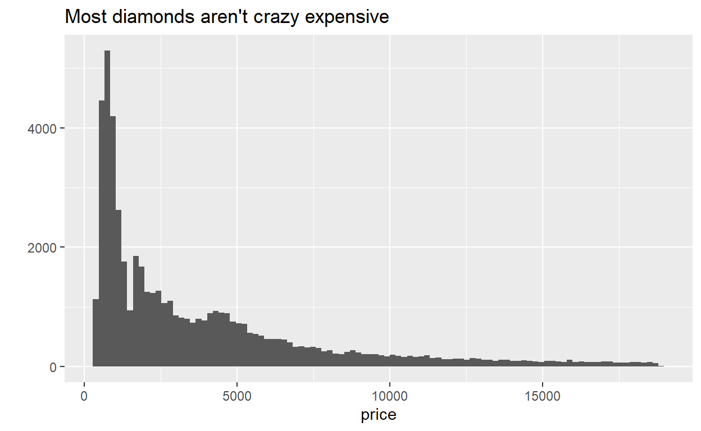

No one likes sitting around waiting for code to finish running, and we may not have access to cloud computing options all the time. Even though we love R, we have to admit that it can be slow at times. Here are five different things that make dealing with computationally expensive operations in R more manageable (and maybe even more fun).
Recently, in my senior project, we have been doing a lot of modeling in R. We are somewhat limited to running code on our own machines (instead of leveraging cloud resources), so there has been a fair amount of waiting for code to finish running. Not a crazy amount, but still. Training algorithms and tuning hyperparameters (the parameters that are not necessarily learned directly from the data, like what K to choose in K nearest neighbors), can often be a huge burden on less powerful machines. That means these computations take time. This post is an attempt to help you deal with that reality.
Hopefully I don’t annoy you with repeating the term “computationally expensive operations” too much. Below I have listed the five main points that we will discuss in this post.
tictoc package - timing computationally expensive operationsbeepr package - play a notification sound after computationally expensive operations finish runningpins package - cache computationally expensive operations for sharing and future re-useWe will demonstrate the use of these resources using a simple machine learning example. As always, here are the packages that you will need to install and load in order to run the code yourself:
For our example we will set up a basic decision tree regressor with the tidymodels suite of R packages. tidymodels is to modeling as the tidyverse is to data wrangling and visualization. They are both meta-packages that house many smaller packages that work well together and share a common API and design philosophy.
If you have ever used the popular caret package to do modeling in R, tidymodels is sort of like the successor to caret. The fantastic caret author, Max Kuhn, is leading the tidymodels team at RStudio. This post is not really meant to be an introduction to tidymodels, but the API is straightforward enough that the example should make sense without too much explanation. I’ll link to resources for learning more at the end of the post, and I may do an “Intro to tidymodels” type post in the future. I mostly want to focus on the five tips mentioned previously.
The data that we will use is from the diamonds dataset in the ggplot2 package. It contains price and other attributes of over 50,000 diamonds. Also, the tidymodels meta-package also contains ggplot2 and dplyr for all your data wrangling and visualization needs, so there is generally no need to load them separately.
# ?diamonds - run this in your console to learn more about the diamonds dataset
dat <- ggplot2::diamonds
glimpse(dat)
Rows: 53,940
Columns: 10
$ carat <dbl> 0.23, 0.21, 0.23, 0.29, 0.31, 0.24, 0.24, 0.26, 0.22~
$ cut <ord> Ideal, Premium, Good, Premium, Good, Very Good, Very~
$ color <ord> E, E, E, I, J, J, I, H, E, H, J, J, F, J, E, E, I, J~
$ clarity <ord> SI2, SI1, VS1, VS2, SI2, VVS2, VVS1, SI1, VS2, VS1, ~
$ depth <dbl> 61.5, 59.8, 56.9, 62.4, 63.3, 62.8, 62.3, 61.9, 65.1~
$ table <dbl> 55, 61, 65, 58, 58, 57, 57, 55, 61, 61, 55, 56, 61, ~
$ price <int> 326, 326, 327, 334, 335, 336, 336, 337, 337, 338, 33~
$ x <dbl> 3.95, 3.89, 4.05, 4.20, 4.34, 3.94, 3.95, 4.07, 3.87~
$ y <dbl> 3.98, 3.84, 4.07, 4.23, 4.35, 3.96, 3.98, 4.11, 3.78~
$ z <dbl> 2.43, 2.31, 2.31, 2.63, 2.75, 2.48, 2.47, 2.53, 2.49~Let’s says after doing some initial exploration of the data that we want to try and predict price using the rest of the columns (variables/features) in our data.
# quick plot from gpglot2 to see the distribution of diamond prices
ggplot2::qplot(data = dat, x = price, bins = 100) +
labs(title = "Most diamonds aren't crazy expensive")

First, we will split our data into training and testing sets using functions from tidymodels.
# initial_split, training, and testing are functions from the rsample
# package that is part of tidymodels
# set a seed for reproducibility of the 'randomness'
set.seed(123)
# split the data, using 3/4 for training
# and 1/4 for testing
dat_split <- initial_split(data = dat, prop = 3/4)
# get the training and testing sets from the data split
dat_train <- training(dat_split)
dat_test <- testing(dat_split)
# again, I won't go into the tidymodels stuff too much,
# but dat_split is an rsample rsplit object.
dat_split
<Analysis/Assess/Total>
<40455/13485/53940>dat_train
# A tibble: 40,455 x 10
carat cut color clarity depth table price x y z
<dbl> <ord> <ord> <ord> <dbl> <dbl> <int> <dbl> <dbl> <dbl>
1 0.23 Ideal E SI2 61.5 55 326 3.95 3.98 2.43
2 0.23 Good E VS1 56.9 65 327 4.05 4.07 2.31
3 0.290 Premium I VS2 62.4 58 334 4.2 4.23 2.63
4 0.24 Very Good J VVS2 62.8 57 336 3.94 3.96 2.48
5 0.26 Very Good H SI1 61.9 55 337 4.07 4.11 2.53
6 0.22 Fair E VS2 65.1 61 337 3.87 3.78 2.49
7 0.3 Good J SI1 64 55 339 4.25 4.28 2.73
8 0.23 Ideal J VS1 62.8 56 340 3.93 3.9 2.46
9 0.22 Premium F SI1 60.4 61 342 3.88 3.84 2.33
10 0.31 Ideal J SI2 62.2 54 344 4.35 4.37 2.71
# ... with 40,445 more rowsdat_test
# A tibble: 13,485 x 10
carat cut color clarity depth table price x y z
<dbl> <ord> <ord> <ord> <dbl> <dbl> <int> <dbl> <dbl> <dbl>
1 0.21 Premium E SI1 59.8 61 326 3.89 3.84 2.31
2 0.31 Good J SI2 63.3 58 335 4.34 4.35 2.75
3 0.24 Very Good I VVS1 62.3 57 336 3.95 3.98 2.47
4 0.23 Very Good H VS1 59.4 61 338 4 4.05 2.39
5 0.32 Premium E I1 60.9 58 345 4.38 4.42 2.68
6 0.3 Ideal I SI2 62 54 348 4.31 4.34 2.68
7 0.3 Good J SI1 63.4 54 351 4.23 4.29 2.7
8 0.3 Good J SI1 63.8 56 351 4.23 4.26 2.71
9 0.3 Very Good J VS2 62.2 57 357 4.28 4.3 2.67
10 0.23 Very Good F VS1 60.9 57 357 3.96 3.99 2.42
# ... with 13,475 more rowsNext we will further split dat_train, our training set, so that later on we can use cross-validation to find the best hyperparameters for our decision tree.
set.seed(123)
#rsample::vfold_cv for creating cross-validation folds
folds <- vfold_cv(dat_train)
folds
# 10-fold cross-validation
# A tibble: 10 x 2
splits id
<list> <chr>
1 <split [36409/4046]> Fold01
2 <split [36409/4046]> Fold02
3 <split [36409/4046]> Fold03
4 <split [36409/4046]> Fold04
5 <split [36409/4046]> Fold05
6 <split [36410/4045]> Fold06
7 <split [36410/4045]> Fold07
8 <split [36410/4045]> Fold08
9 <split [36410/4045]> Fold09
10 <split [36410/4045]> Fold10Now we will create something called a model specification, and we will mark the decision tree hyperparameters, tree_depth and cost_complexity, that we want to tune with the special placeholder function, tune(). tree_depth is simply the maximum depth of the tree, while cost_complexity will hopefully help to create a simpler tree that doesn’t overfit the training data. At this point we haven’t fit any data to the model, but instead we are basically laying out a blueprint for our model.
# tidymodels uses the parsnip package for creating model specifications
# like decision_tree()
tree_spec <- decision_tree(
cost_complexity = tune(), # mark that we will be tuning cost_complexity
tree_depth = tune() # mark that we will be tuning tree_depth
) %>%
# specify the computational engine for the decision tree,
# in this case we will use an algorithm from the
# rpart R package
set_engine('rpart') %>%
# specify that we want our decision tree to do
# regression, instead of the default classification
set_mode('regression')
At this point, we can also create a grid of candidate hyperparameters with which to tune our decision tree. We can use this grid to train many models using our cross-validation folds and see which models turn out best with specific hyperparameters.
tree_grid <- grid_regular(
cost_complexity(),
tree_depth(),
levels = 5
)
tree_grid
# A tibble: 25 x 2
cost_complexity tree_depth
<dbl> <int>
1 0.0000000001 1
2 0.0000000178 1
3 0.00000316 1
4 0.000562 1
5 0.1 1
6 0.0000000001 4
7 0.0000000178 4
8 0.00000316 4
9 0.000562 4
10 0.1 4
# ... with 15 more rowsAlmost done setting up the example, I swear. Maybe I should have turned this into a tidymodels tutorial. tidymodels contains the workflows package that allows you to bundle together models, formulas, and pre-processing recipes (which we haven’t shown in this post). This makes it easy to work with just a single object instead of multiple objects scattered across an analysis.
tree_workflow <- workflow() %>%
add_model(tree_spec) %>%
add_formula(price ~ .)
tree_workflow
== Workflow ==========================================================
Preprocessor: Formula
Model: decision_tree()
-- Preprocessor ------------------------------------------------------
price ~ .
-- Model -------------------------------------------------------------
Decision Tree Model Specification (regression)
Main Arguments:
cost_complexity = tune()
tree_depth = tune()
Computational engine: rpart Fans of classic older videos games with especially appreciate 3 and 8
The tidymodels website has an amazing set of getting started tutorials to look into if you are new to tidymodels.
R.version
_
platform x86_64-w64-mingw32
arch x86_64
os mingw32
system x86_64, mingw32
status
major 4
minor 0.3
year 2020
month 10
day 10
svn rev 79318
language R
version.string R version 4.0.3 (2020-10-10)
nickname Bunny-Wunnies Freak Out packageVersion('tidymodels')
[1] '0.1.2'packageVersion('pins')
[1] '0.4.5'packageVersion('tictoc')
[1] '1.0'packageVersion('beepr')
[1] '1.3'packageVersion('doParallel')
[1] '1.0.16'